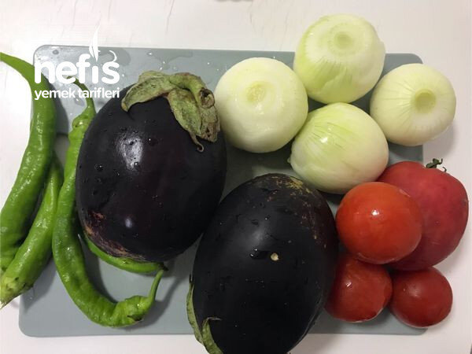

🍽️ 12-14 kişilik⏱️ Hazırlık: 40 dk🔥 Pişirme: 35 dk🏷️ Hamur İşi Tarifleri🏷️ Börek Tarifleri
Malzemeler
- 600-700 gram patlıcan
- 3-4 adet soğan
- 3-4 biber
- 3-4 domates
- Yarım çay bardağı zeytinyağı
- 1 çay kaşığı pulbiber
- 1 çay kaşığı karabiber
- Tuz
- 2,5 bardak su
- 1 yemek kaşığı tuz
- Alabildiği kadar un
- 1 kase zeytinyağı
Hazırlanışı
- Önce iç malzemeyi hazırlayalım.
- Tencereye sıvı yağı koyarak ocağın altını açıyoruz.
- Soğanları rondodan geçirerek ya da küçük doğrayarak kavuruyoruz.
- Biberleri de doğrayıp kavuruyoruz.
- Patlıcanların kabuklarını soyarak küçük doğruyoruz onları da ilave edip kavurmaya devam ediyoruz.
- Patlıcanlar yumuşayınca kabuklarını soyup doğradığımız domatesleri de ilave ediyoruz.
- Domatesler suyunu çekince, tuz, karabiber, pulbiber ilave ederek ocağı kapatıyoruz.
- İç malzememizi soğumaya bırakıyoruz.
- Hamuru hazırlıyoruz.
- 2, 5 bardak su ve 1 kaşık tuz ile alabildiği kadar un ile hamurumuzu kulak memesi kıvamında tutup yoğuruyoruz.
- 40 parçaya bölüp bezeleri yuvarlıyoruz.
- Bezeleri küçük bir tabak büyüklüğünde açıyoruz.
- 20 hamuru aralarına bir kaşıktan biraz az yağ ile yağlayarak üst üste koyuyoruz.
- Diğer 20 hamura da aynı işlemi uyguluyoruz.
- Hamurumuzu tepsi büyüklüğünde açıyoruz.
- Fırın kağıdı serilmiş tepsiye hamurumuzu koyuyoruz.
- Üzerine malzememizi yayıyoruz.
- Diğer hamuru da aynı şekilde açarak diğer hamurun üzerine koyuyoruz.
- Alttaki hamurla üsteki hamurun kenarında incecik dişarıya doğru katlıyoruz.
- Üzerine zeytinyağı sürerek 200 derecede üzeri kızarasaya kadar pişiriyoruz.
- İstediğimiz büyüklükte kesip servis yapıyoruz.